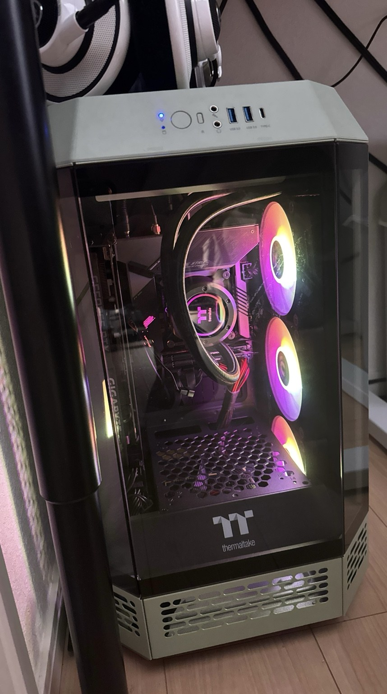
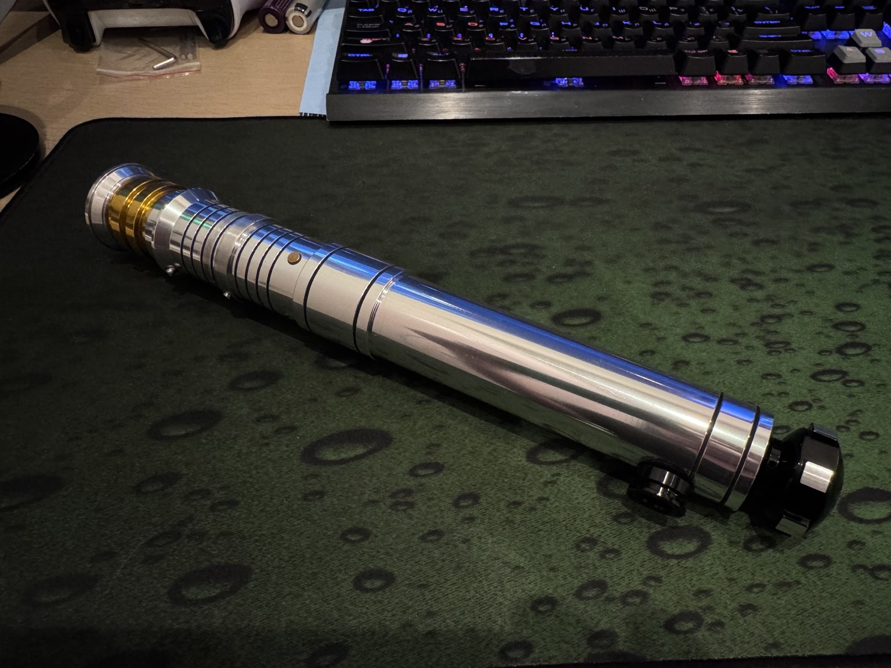
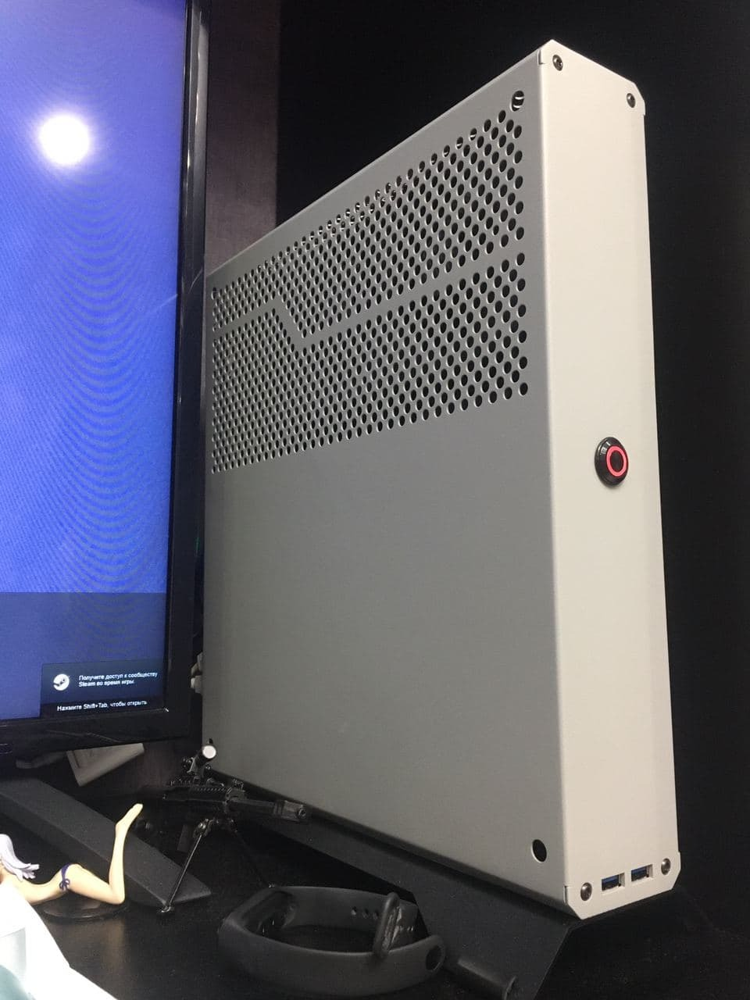
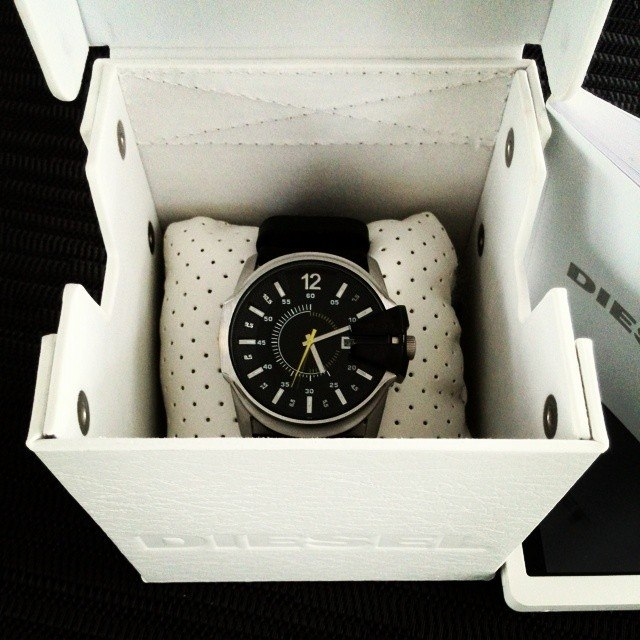
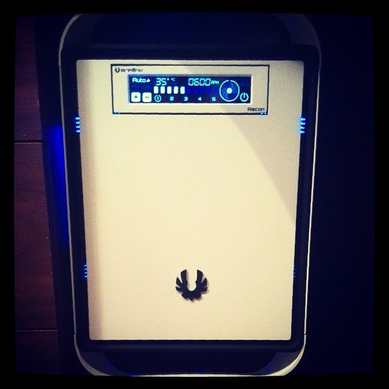

ブログ
レコード、CD、オーディオ機器を手に入れた時期を、新しいものから順に残していく個人的な記録。
記事

PCのアップグレード
7,000円で入手した360mm簡易水冷をきっかけに、Dr Zaber Sentry 2.0からThermaltake The Tower 250へ移行。
Obi-Wan Kenobi Episode I + Xenopixel
Mercariで入手した不動品。ハード故障ではなくソフトウェア側の問題だった。

Ultimate Works RVS + Asteria
BOOKOFFのジャンクコーナーで13,000円だったライトセーバーを修理・設定して復活。

PC Build
Dr Zaber Sentry 2.0にCore i7-10700K、RTX 3070、32 GB DDR4を収めた超小型ビルド。

Diesel DZ1295
購入直後のDiesel DZ1295。大ぶりなケースとブラックレザーストラップのクォーツウォッチ。

初めてのPC
Core i7-3770KとASUS P8Z77-I DELUXEで組んだ最初のコンパクトPC。後にGTX 980へアップグレード。
購入記録
新しい順8月に加わったレコード
Art Tatum / Ben Webster — The Tatum Group Masterpieces, Vol. 8
紙ふうせん — 再会 -新たなる旅立ち-
Vladimir Ashkenazy — Rachmaninov: Preludes
Shirley Bassey — Best 20
根津甚八 — ファースト・コンサート
7月に加わった作品
山下達郎 — POCKET MUSIC
Foreigner — 4
Wham! — Make It Big
ポルノグラフィティ — THUMPχ
MOONDROP Variations
MOONDROP Variationsを購入。現在のメインIEMのひとつ。
新しい冒険：Obi-Wan Kenobi Episode I + Xenopixel
Mercariで「動作未確認／不動」として見つけたもう一本のライトセーバー。今回はハードではなくソフト側の問題だった。
記事を読む山下達郎と日本のレコード
山下達郎 — RIDE ON TIME
山下達郎 — FOR YOU
井上陽水 — 招待状のないショー
12月の日本盤
Kazumi Band — Talk You All Tight
The Chanels — Live at Whisky A Go Go
The Chanels — Mr. Black Chanels
N.S.P — BEST ALBUM 青春のかけら達
堀内孝雄 — こんにちは
鈴木茂 — Serenade
TEAC A-H01
TEAC A-H01を購入。デスクトップのアンプ／DACとしてシステムに追加。
WharfedaleとOrtofon
Wharfedale Diamond 10.1とOrtofon 2M Redを購入。
10月のレコード
Elmo Hope Trio — The Final Sessions Vol. 1
William Ackerman — Passage
泰葉 — Fly-Day Chinatown
松原みき — Stay With Me
竹内まりや — Plastic Love
GIGABYTE AORUS FO48U
48インチOLEDモニター、GIGABYTE AORUS FO48Uを購入。
SMSL PH-1
フォノイコライザーSMSL PH-1を購入。
Lo-D PS-38とAudio-Technica
Lo-D PS-38レコードプレーヤーとAudio-Technica AT-VM95Eカートリッジを購入。
The Weeknd — Starboy
The WeekndのStarboyをレコードで購入。
AURORA
AURORA — The Gods We Can Touchをレコードで購入。
Sumiko Pearl
Sumiko Pearlカートリッジを購入。
MOONDROP KATO
発売年の2021年にMOONDROP KATOを購入。夏頃の記録。
AKG Q701
AKG Q701を発売年の2010年に購入。